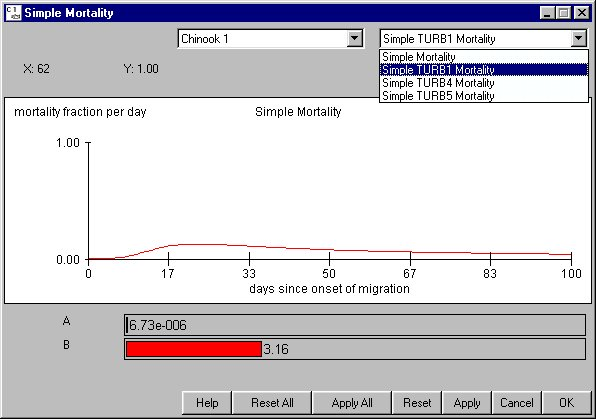

Simple Mortality Equation: FLUSH Model
Selecting Behavior Simple Mortality Equation opens a window for setting the parameters used in the Simple Mortality Model based on the FLUSH Model (see COMPASS in Context with Other Models). In the Simple Mortality Model, reservoir survival is a function of fish travel time. To use these parameter values during a run, select Simple Mortality for the Mortality Model in RunRuntime Settings. There are four choices for the Simple Mortality Equation where:
Simple Mortality Equation opens a window for setting the parameters used in the Simple Mortality Model based on the FLUSH Model (see COMPASS in Context with Other Models). In the Simple Mortality Model, reservoir survival is a function of fish travel time. To use these parameter values during a run, select Simple Mortality for the Mortality Model in RunRuntime Settings. There are four choices for the Simple Mortality Equation where:
- A: Constant known per species.
- B: Constant known per species.
This is an Equation Input window.

Simple Mortality equation window
Marmorek, D.R., et al. 1996. Plan for Analyzing and Testing Hypotheses (PATH): Final report on the retrospective analysis for fiscal year 1996. Compiled and edited by ESSA Technologies Ltd., Vancouver, B.C.